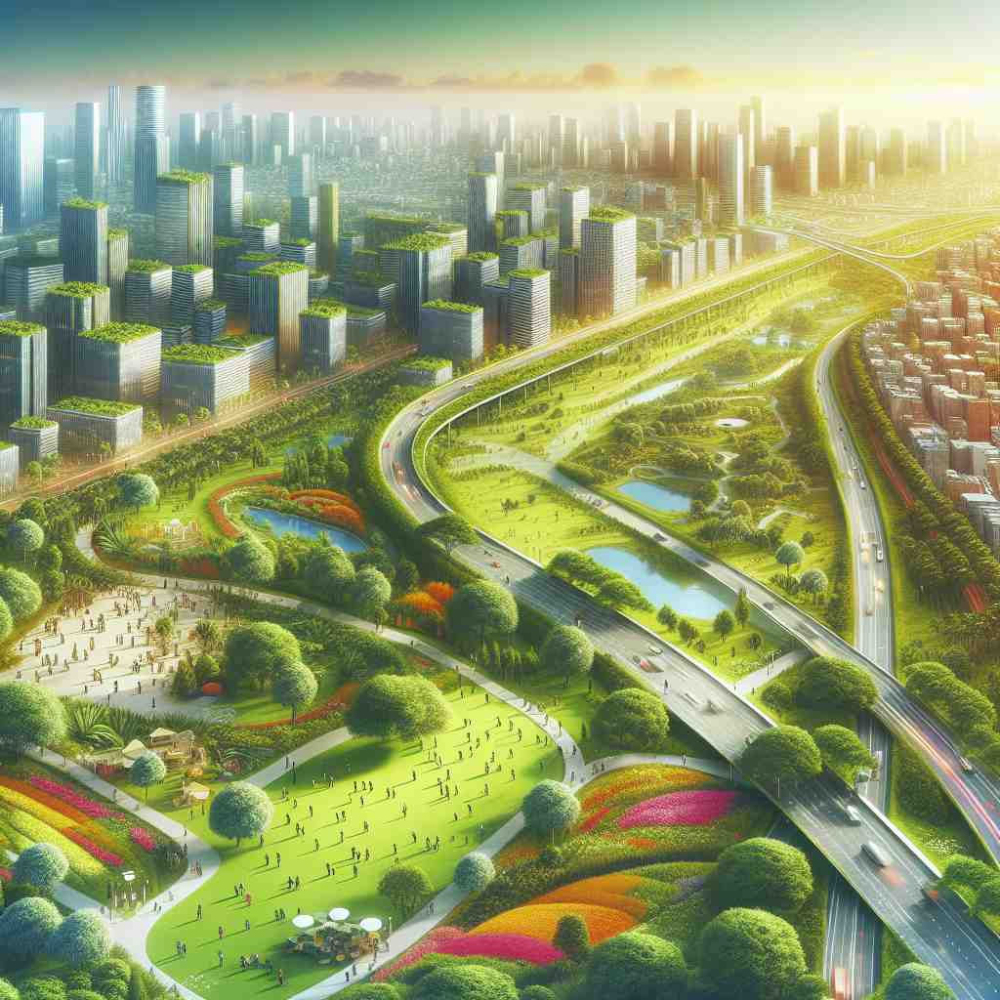
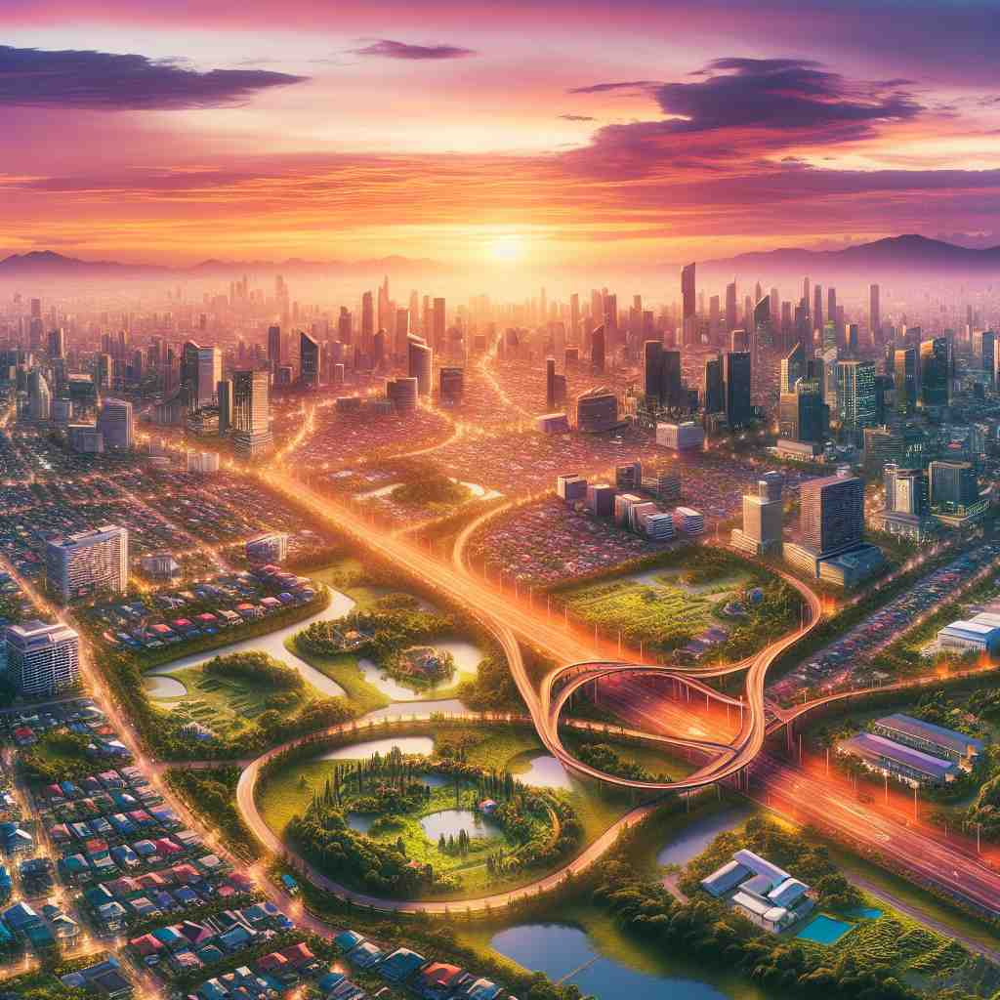

🗝️ v. to spread out over a large area in an untidy or irregular way
🖼️ 在一个孩子的房间里，玩具、书籍和衣物杂乱无章地铺满地板。这个场景生动地展示了'sprawl'的含义，指某物不规则地散布开来，占据了很大的空间。
🔍 想象一个人随意躺在沙发上，四肢伸展，占据了大片空间。这个画面就是'sprawl'的核心含义：以不规则、松散的方式占据或扩展到大面积区域。无论是城市发展、人体姿势还是书写方式，都可以用这个核心概念来联想。记住这个画面，将有助于理解和记忆'sprawl'的各种用法。

💬 The new buildings continue to sprawl across the landscape, bringing more people to the city.

💬 The urban sprawl in the city creates a mix of buildings and nature.

💬 The houses seem to sprawl across the area, creating a lively suburban neighborhood.
💬 The toys are sprawled everywhere in the living room.
🔗 1. sprawled: 伸展的
2. sprawling: 蔓延的
3. sprawler: 四肢伸展的人
🗝️ v. to sit or lie with your arms and legs spread out in a relaxed or careless way
🖼️ 一个周末的下午，一个小男孩在沙发上随意地躺下，手臂和腿无拘无束地伸展开来，脸上挂着轻松的微笑，完美地体现了'sit or lie with your arms and legs spread out'的含义。
💬 He sprawled on the sofa, taking up all the space.
❓ 从核心含义延伸，描述人体以不规则、松散的方式占据空间
🗝️ n. an area of a city or town that has grown outwards into the countryside in an uncontrolled way
🖼️ 从高处俯瞰城市的边缘，住宅建筑像潮水般涌向乡村，毫无规划地蔓延着。这个场景体现了'sprawl'作为城市或城镇无序扩展区域的含义。
💬 Urban sprawl has led to increased traffic congestion.
❓ 由动词转化为名词，描述城市无序扩张的结果
🗝️ v. to write or be written in an untidy way, covering a large area
🖼️ 一个学生匆忙在笔记本上写下作业，字迹潦草地占据整个页面，线条布满了页面的每个角落。这一场景完美地展示了'sprawl'作为潦草书写的含义。
💬 His handwriting sprawled across the entire page.
❓ 核心含义应用于书写，表示字迹杂乱无章地覆盖大面积